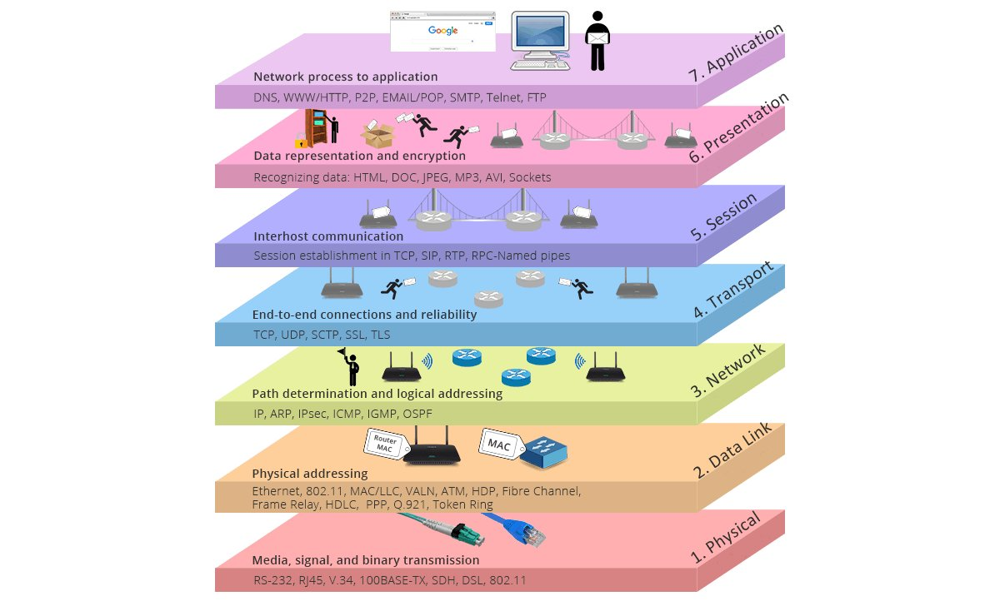
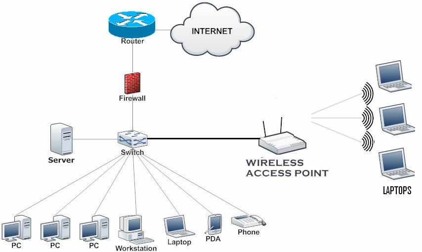
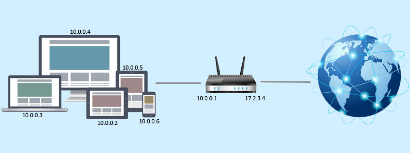
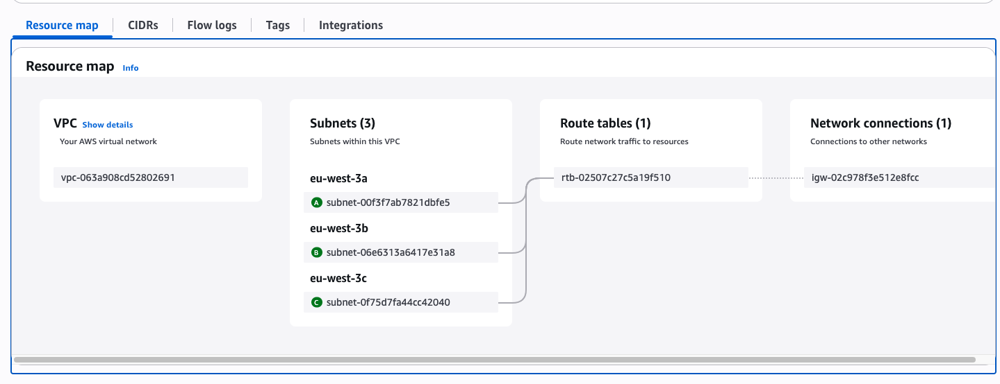

Wow, tout ce bazar autour des réseaux, des sous-réseaux, et des adresses IP derrière tout le modèle OSI
14 Juillet 2025, 11:01 CEST
ComputeComprendre les bases réseau pour DevOps et Cybersécurité
Aujourd’hui, je veux parler d’un concept de base que tout DevOps ou ingénieur cybersécurité doit comprendre.
Spécialement en DevOps, on utilise tous les jours des adresses IPv4 ou IPv6, qu’elles soient privées ou publiques, dans différents sous-réseaux.
Le défi des plateformes cloud
Mais parfois, on se perd facilement, surtout sur des plateformes cloud comme Azure ou AWS. On crée plein de sous-réseaux, on doit déterminer quelle adresse IPv4 publique via une Elastic IP attribuer, ou comprendre les IP par défaut assignées par AWS.
Bref : on doit savoir "quoi", "quand" et "pourquoi" on le fait.
🔧 Le Modèle OSI Simplifié (pour DevOps & Cybersécurité)
Le modèle OSI (Open Systems Interconnection) est une architecture en 7 couches qui standardise la façon dont les données circulent à travers un réseau.
Il aide les pros DevOps et SecOps à comprendre où vivent les protocoles, outils, et vulnérabilités.

En tant que DevOps ou pentester, on travaille principalement sur les couches 3 (Réseau) et 4 (Transport).
Les couches 1 et 2 (Physique et Liaison de données, comme les adresses MAC) sont gérées par les infrastructures cloud (ex. AWS).
Donc : focus sur les couches 3 & 4.
🔌 Qu’est-ce qu’un Réseau ?
Un réseau est un groupe de deux ordinateurs ou plus connectés pour partager des ressources (fichiers, imprimantes, internet...).

📗 IPv4 (Internet Protocol version 4)
Format : 4 octets en décimal (ex : 192.168.64.3)
Taille : 32 bits (2³² ≈ 4,3 milliards d’adresses)
Structure Exemple :
- Binaire : 11000000.10101000.01000000.00000011
- Décimal : 192.168.64.3
Utilisation : Toujours largement utilisé dans les réseaux locaux, les routeurs domestiques, et sur Internet.
Problème : épuisement des adresses — pas assez d’IP pour tous les appareils.
📘 IPv6 (Internet Protocol version 6)
Format : Groupes hexadécimaux séparés par : (ex : fe80::c83b:ccff:fe0e:1069)
Taille : 128 bits (2¹²⁸ ≈ infini d’adresses)
Avantages :
- Beaucoup plus d’adresses (idéal pour IoT, cloud, etc.)
- Meilleur routage et sécurité
Utilisation actuelle : En croissance dans les systèmes modernes (cloud, mobiles...), mais l’IPv4 reste dominant.
🔐 IP Publiques vs Privées
| Type | Utilisé où ? | Routable sur Internet ? | Exemple |
|---|---|---|---|
| Publique | Sur Internet | ✅ Oui | 8.8.8.8 (Google DNS) |
| Privée | Réseaux locaux (LAN) | ❌ Non | 192.168.x.x, 10.x.x.x, 172.16.x.x – 172.31.x.x |
IP privée : utilisée en interne (ex : réseau domestique)
IP publique : visible sur Internet
NAT (Network Address Translation) : permet à une IP privée de communiquer avec l’extérieur via une IP publique.

✅ Qu’est-ce que le Subnetting ? (version simple)
Subnetting = diviser un grand réseau en petits morceaux plus faciles à gérer.
Imagine un hôtel avec 1000 chambres. On ne dit pas juste “Chambre 752”, mais :
- “Allez à l’étage 7, puis chambre 52.”
Dans un réseau :
- Adresse IP = numéro de chambre
- Subnet = l’étage
- Masque de sous-réseau = indique où s’arrête l’étage et où commence la chambre
⚙️ Résumé du Workflow : Déployer une EC2 avec IP publique + IP privée
Internet ↔ IGW ↔ Table de Routage ↔ Subnet ↔ Instance EC2

❗ Pour que l’instance EC2 soit réellement accessible publiquement :
- Ajouter une Internet Gateway :
resource "aws_internet_gateway" "igw" { vpc_id = aws_vpc.main.id } - Ajouter une Table de Routage et l’associer au Subnet :
resource "aws_route_table" "public" { vpc_id = aws_vpc.main.id route { cidr_block = "0.0.0.0/0" gateway_id = aws_internet_gateway.igw.id } } resource "aws_route_table_association" "a" { subnet_id = aws_subnet.public.id route_table_id = aws_route_table.public.id } - S’assurer que l’EC2 a une IP publique :
resource "aws_instance" "example" { ami = "ami-xxxxxx" instance_type = "t2.micro" subnet_id = aws_subnet.public.id vpc_security_group_ids = [aws_security_group.web.id] associate_public_ip_address = true }
🧠 Étape par étape
🌐 1. Internet Gateway (IGW)
Permet à la VPC d’accéder à l’internet public.
C’est comme le routeur de ta maison.
📘 2. Table de Routage
Permet d’indiquer vers où envoyer le trafic :
route { cidr_block = "0.0.0.0/0" gateway_id = aws_internet_gateway.igw.id }
Cela signifie : “tout le trafic vers internet passe par l’IGW”.
📦 3. Subnet
Un segment IP à l’intérieur de ta VPC.
Un sous-réseau devient “public” si :
- Il est associé à une table de routage pointant vers l’IGW.
- Les instances dedans ont une IP publique.
🔄 4. NAT Gateway (optionnel pour sous-réseaux privés)
Si ton EC2 est dans un subnet privé mais a besoin d’accès sortant à internet (par exemple pour MAJ ou télécharger), tu peux utiliser un NAT Gateway.
Permet accès sortant vers internet.
Bloque le trafic entrant.
Pas nécessaire si tu veux que l’instance soit 100% publique.
🔍 Le modèle OSI dans AWS (mapping)
| Élément AWS | Couche OSI | Explication |
|---|---|---|
| Adresse IPv4 d’EC2 | Couche 3 | Adresse logique (routage IP) |
| Subnet (ex : 10.0.1.0/24) | Couche 3 | Regroupe les IPs logiques |
| Table de Routage | Couche 3 | Définit les chemins réseau |
| IGW / NAT Gateway | Couche 3 | Permet l’accès public ou privé |
| Règle 0.0.0.0/0 | Couche 3 | Tout le trafic sortant |
| Groupe de sécurité (SG) | Couche 4 | Filtres par protocole / port |
| ACL réseau | Couches 3 & 4 | Filtres IP + port |
| Adresse MAC (invisible dans AWS) | Couche 2 | Gérée par AWS, rarement utilisée directement |
🔐 Conseils de Sécurité (OSI)
- C7 (Application) : attention aux injections, XSS, auth cassée
- C6 (Présentation) : chiffrement fort (TLS 1.3+)
- C3–C4 (Réseau/Transport) : restreindre les ports, surveiller le trafic
- C1–C2 (Physique/Liaison) : sécurité physique, désactiver les ports inutilisés
✅ Conclusion
Voici tout ce que tu dois comprendre en tant que DevOps ou Pentester pour bien configurer ton environnement AWS EC2, comprendre les réseaux, IP, sous-réseaux, et leur place dans le modèle OSI.
Références
Partagez cet article :